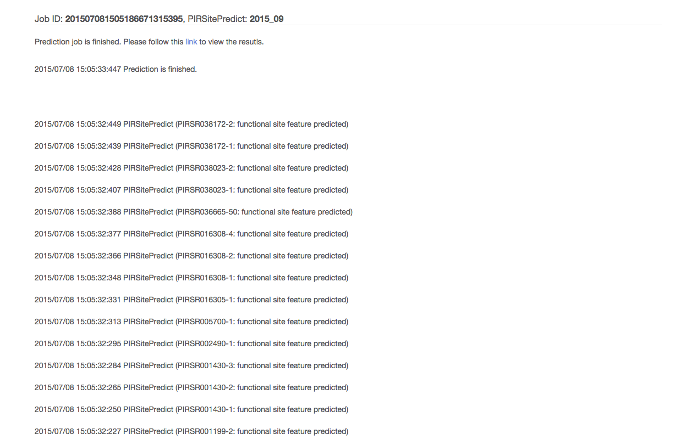

We provide online prediction service. User can upload an InterProScan XML file, select PIRSitePredict release they want to use (default: the latest release), specify the organism and HMMer e-value cutoff, optionally, user can also enter his/her email, a notification email will be sent out once the prediction job is finished and the results are ready, then click Submit to start the prediction job.
Each prediction job has an unique job ID, and will be run in the background. However, the detailed job status will be presented to the user.
Once the job is finished and the prediction results are ready, a link leads to the prediction results will be presented to the user. The same link will be presented in the notification email if user has provided his/her email when the job was submitted.

Instead of following the link presented to the user, user can also use the job ID to retrieve the prediction results.
The prediction results are presented as paginated tabular views. By using the search box on top of the table, user can quickly filter the predictions. Three buttons on the top-right corner of the table allow user the export the (filtered) prediction results in tab-separated values (TSV), Extensible Markup Language (XML) and Generic Feature Format (GFF3) formats.
The IDs in The PIRSR rule ID, Protein ID, and Nucleotide ID columns are links to prediction results in rule centric view, protein centric view and nucleotide centric view respectively.
Rule centric view presents the results predicted by the given rule in the given prediction job. The left column lists the proteins that have functional sites prediction by the given rule. By clicking each protein ID on the left, the right column will show the detailed prediction results (Features, Comments, Keywords) as well as the protein amino acid sequences. By clicking the icon next to each prediction result, a pop-up box will appear with source information (link to PIRSR rule that generates this prediction).
By clicking the PIRSR rule ID link from the rule centric view, a HTML view of PIRSR rule will be presented.
Protein centric view presents the results predicted by all the relevant PIRSR rules in the given prediction job with detailed prediction results (Features, Comments, Keywords) as well as the protein amino acids sequences. By clicking the icon next to each prediction result, a pop-up box will appear with source information (link to PIRSR rule that generates this prediction).
Nucleotide centric view presents the results for proteins derived from the ORF of the given nucleotide sequence in the given prediction job. The left column lists the proteins that are derived from the ORF of the given nucleotide sequence and have functional sites prediction by the PIRSR rules. The right column starts with the nucleotide sequence, followed by the detailed prediction results (Features, Comments, Keywords) as well as the protein amino acids sequences of the proteins listed on the left column.